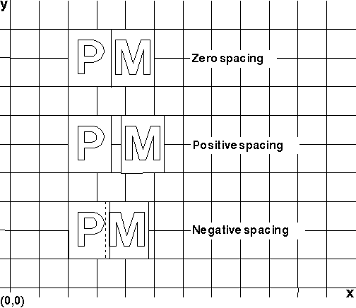

Certain output devices permit you to specify extra space between character cells by using the character extra attribute. Sometimes the space between words can also be expanded by increasing the size of the break character, usually defined as the space character, by using the break extra attribute. If this adjustment to either attribute is permitted, the result will be in addition to the sizing effects caused by the following parameters:
The break values you can specify create different effects, as follows:
Break Values and Their Effects
┌────────────────────┬────────────────────────────────────────┐│Value │Effect │ ├────────────────────┼────────────────────────────────────────┤ │Positive │Forces characters apart. │ ├────────────────────┼────────────────────────────────────────┤ │0 │Resumes the default spacing created by │ │ │other parameters. │ ├────────────────────┼────────────────────────────────────────┤ │Negative │Forces characters together, even │ │ │overlapped characters. │ └────────────────────┴────────────────────────────────────────┘
These effects are illustrated in the following figure.
The Cumulative Effect of Break Values
The above are fixed integer values specified in world coordinates. Both the character extra and break extra attributes have initial default values of 0, which can be changed using GpiSetDefAttrs (CBB_EXTRA) and (CBB_BREAK_EXTRA). These values can be changed using GpiSetCharExtra or GpiSetCharBreakExtra respectively, and the values can be queried using GpiQueryCharExtra and GpiQueryCharBreakExtra.